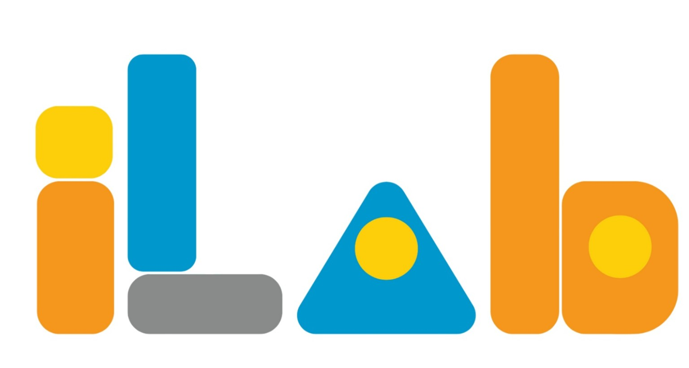

PRODUTOS E SERVIÇOS DO BAIRRO
Encontre perto.
Fortaleça a comunidade.
Conheça os negócios, profissionais e serviços da sua região.
Relatos comunitários
Registros públicos de melhorias e acontecimentos do bairro. Os responsáveis fazem os cadastros.
Conexão Comunidade
Um projeto de aprendizagem e colaboração do ILAB para aproximar a comunidade dos negócios e serviços locais.
A consulta é pública. Os responsáveis pelo teste usam uma senha compartilhada para editar os registros.
Cadastre somente informações autorizadas para divulgação pública.

Administrar
Todos os responsáveis possuem o mesmo acesso. O nome informado no login identifica as alterações, mas não comprova a identidade de quem as fez.
Atividade recente
Sobre os dados anteriores
Os arquivos criptografados da versão anterior permanecem preservados no repositório. Eles não foram convertidos porque sua exportação depende do servidor e da chave antigos. Esta versão usa um arquivo público separado.